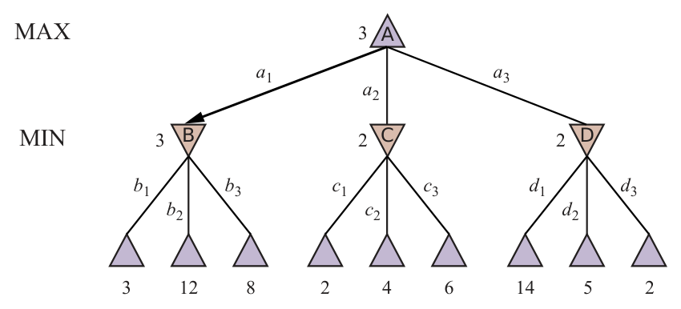
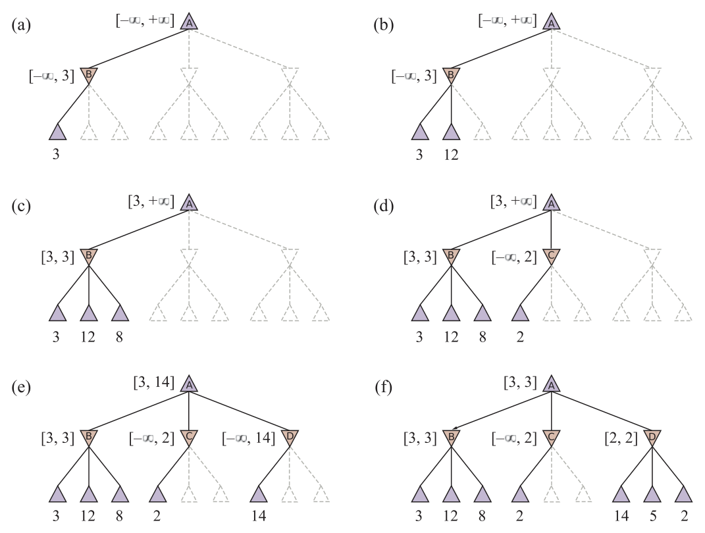
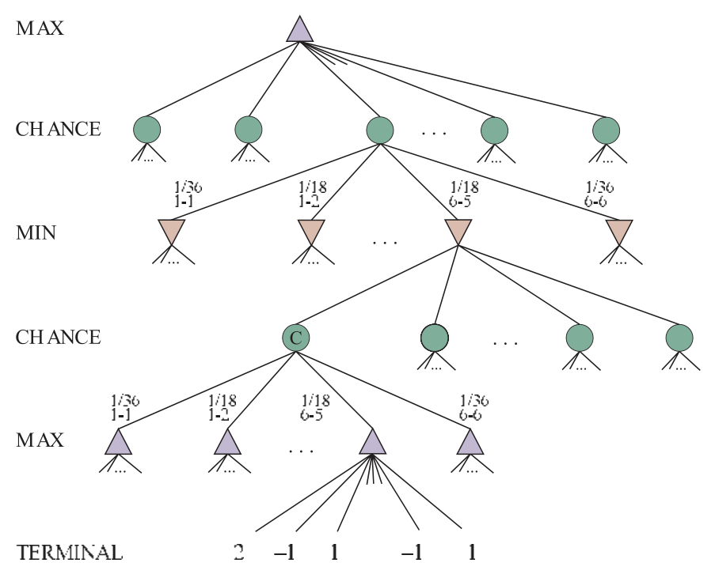

Overview
Adversarial search deals with competitive environments in which agents have conflicting goals, with games as the standard example. The main methods are minimax, alpha–beta pruning, cutting off search with an evaluation function, expectiminimax for games of chance and averaging over deals for games of imperfect information (Russell and Norvig, 2021, pp. 174–175).
Games and their types
- Deterministic or stochastic: whether chance (dice, a shuffled deck) affects the outcome.
- Number of players: one, two or more.
- Zero-sum or not: whether one player's gain is exactly the other's loss.
- Perfect or imperfect information: whether every player sees the complete state (perfect information means fully observable).
| Deterministic | Chance | |
|---|---|---|
| Perfect information | Chess, checkers, Go, Othello | Backgammon, Monopoly |
| Imperfect information | Battleship, blind tic-tac-toe | Bridge, poker, Scrabble |
- Most studied in AI: deterministic, two-player, turn-taking, perfect-information, zero-sum games (tic-tac-toe, chess, Go).
- The players are MAX and MIN; MAX moves first and they alternate until the game ends.
- Move means action; position means state.
- Differences from ordinary search:
- the opponent is unpredictable, so MAX needs a strategy: a move for every possible reply by MIN (Russell and Norvig, 2021, p. 148);
- time limits make searching to the end infeasible, so the program must approximate.
- Key dates: Zermelo (1912) gives the basis of minimax; Shannon (1950) sets out evaluation functions and selective search; McCarthy (1956) conceives alpha–beta pruning (Russell and Norvig, 2021, p. 175).
Formal definition of a game
- Initial state: how the game is set up at the start.
- Player to move in s: whose turn it is in state s.
- Legal moves in s: the moves allowed in s.
- Transition model: Result(s, a), the state reached by making move a in s.
- Terminal test: true when the game is over; such states are terminal states.
- Utility function: Utility(s, p), the final value of terminal state s to player p (chess: 1, 0 or ½ for win, loss or draw).
- Game tree: a search tree following every sequence of moves to a terminal state; leaf values are utilities for MAX.
- A ply is one move by one player (one level of the tree).
- Size: tic-tac-toe has fewer than 9! = 362,880 terminal nodes; chess has over 1040 nodes (Russell and Norvig, 2021, p. 147).
Minimax search
- Minimax(s) =
- Utility(s, MAX) if s is terminal;
- max over moves a of Minimax(Result(s, a)) if MAX is to move;
- min over moves a of Minimax(Result(s, a)) if MIN is to move.
- The minimax decision: MAX plays the move leading to the highest minimax value, the best payoff it can guarantee against optimal play.
- The algorithm explores depth-first to the leaves and passes values back up: MIN nodes take the minimum, MAX nodes the maximum.

- Example: B = min(3, 12, 8) = 3; C = 2; D = min(14, 5, 2) = 2; root = max(3, 2, 2) = 3, so the decision is a1.
Properties (b = legal moves per state, m = maximum depth)
- Complete: yes, if the tree is finite.
- Optimal: yes, against an optimal opponent; against a suboptimal MIN, MAX does at least as well, though a riskier move might then do better.
- Time: O(bm).
- Space: O(bm), or O(m) if moves are generated one at a time.
- Chess (b ≈ 35, about 80 ply) gives about 10123 states, so exact minimax is infeasible (Russell and Norvig, 2021, p. 150).
Alpha–beta pruning
- α: the value of the best (highest) choice found so far for MAX along the path ("at least").
- β: the value of the best (lowest) choice found so far for MIN along the path ("at most").
- Start at the root with α = −∞ and β = +∞; MAX nodes raise α, MIN nodes lower β.
- Pruning condition:
- a MAX node stops when its value reaches β or more (MIN would never let play reach it);
- a MIN node stops when its value falls to α or less (MAX already has a better option) (Russell and Norvig, 2021, pp. 153–154).

- Example: B = 3, so the root is at least 3; C's first leaf is 2, so C is at most 2 and its other two leaves are pruned.
- Root = max(3, min(2, x, y), 2) = 3 whatever the pruned values x and y.
- Nothing below D is pruned, because its leaves (14, 5, 2) come in the worst order.
Move ordering and complexity
- Pruning never changes the root value or the decision; ordering changes only how much is pruned.
- Perfect ordering: O(bm/2) nodes; effective branching factor √b (about 6 for chess), so roughly twice the depth of minimax in the same time.
- Random ordering: roughly O(b3m/4).
- Simple chess ordering (captures, then threats, then forward moves, then backward moves) comes within about a factor of 2 of the best case (Russell and Norvig, 2021, p. 155).
Cutting off search and evaluation functions
- With limited time, the terminal test is replaced by a cutoff test (usually a depth limit) and the utility by an evaluation function (Russell and Norvig, 2021, p. 156).
- H-Minimax(s, d) =
- Eval(s, MAX) if the cutoff test is true at depth d;
- max over a of H-Minimax(Result(s, a), d + 1) if MAX is to move;
- min over a of H-Minimax(Result(s, a), d + 1) if MIN is to move.
- Iterative deepening lets the program play the move from the deepest completed search when time runs out.
- Example: 100 seconds per move at 104 nodes per second gives 106 ≈ 358/2 nodes, so about 8 ply with good ordering.
- Must equal the utility on terminal states and lie between a loss and a win elsewhere.
- Should be fast to compute and strongly correlated with the chances of winning (Russell and Norvig, 2021, p. 156).
- Usually a weighted linear function of features: Eval(s) = w1f1(s) + ··· + wnfn(s).
- Chess material values: pawn 1, knight or bishop 3, rook 5, queen 9 (Russell and Norvig, 2021, p. 157).
- Adding features assumes they contribute independently, so programs also use nonlinear combinations; weights may be learned.
- Apply it only to quiescent positions (no pending move that would change the value wildly); quiescence search extends the search past nonquiescent ones.
- Horizon effect: delaying moves push an unavoidable loss beyond the depth limit; singular extensions reduce it (Russell and Norvig, 2021, pp. 158–159).
Stochastic games and expectiminimax
- Stochastic games include chance, as in backgammon dice.
- The tree adds chance nodes whose branches are outcomes labelled with probabilities (two dice: 21 distinct rolls; doubles 1/36, others 1/18) (Russell and Norvig, 2021, p. 165).

- Expectiminimax(s) =
- Utility(s, MAX) if s is terminal;
- max over a of Expectiminimax(Result(s, a)) if MAX is to move;
- min over a of Expectiminimax(Result(s, a)) if MIN is to move;
- Σr P(r) × Expectiminimax(Result(s, r)) at a chance node, for each outcome r.
- Example: chance nodes over MIN values (2, 4) and (0, −2), each 0.5, are worth 3 and −1; MAX picks the first.
- Time O(bmnm), n = number of distinct outcomes; in backgammon only about 3 ply is feasible (Russell and Norvig, 2021, p. 167).
- The scale of evaluation values matters, not only their order: the evaluation should be a positive linear transformation of the probability of winning (Russell and Norvig, 2021, p. 166).
Games of imperfect information
- In card games (bridge, poker) the opponents' cards are unknown, which resembles one large chance event at the start.
- Bridge has 10,400,600 deals of the two unseen hands, so programs sample about 100 to 1,000 deals consistent with the bidding (Russell and Norvig, 2021, p. 172).
- Weakness: it assumes future states are fully observable, so it never gathers or hides information and never bluffs.
- Optimal play depends on the information (belief) state, not the real state.
Games in practice
- Checkers: Chinook became man–machine world champion in 1994 (Tinsley withdrew through ill health); it used an endgame database for all positions with 8 or fewer pieces (Schaeffer and Lake, 1996, p. 122). In 2007 checkers was proved a draw with perfect play (Schaeffer et al., 2007).
- Chess: Deep Blue lost to Kasparov in 1996 and beat him in 1997, using alpha–beta on special hardware and singular extensions (IBM, no date) (Campbell et al., 2002).
- Othello: superhuman programs since 1997 (Russell and Norvig, 2021, p. 178).
- Go: b starts at 361, so alpha–beta reaches only 4 or 5 ply (Russell and Norvig, 2021, p. 161). AlphaGo (deep learning with Monte Carlo tree search) beat Fan Hui in 2015, Lee Sedol 4–1 in March 2016 and Ke Jie 3–0 in May 2017 (Silver et al., 2016) (Google DeepMind, no date) (Agence France-Presse, 2017). Beating a champion is not solving the game.
- Backgammon: TD-Gammon reached world-champion level with a shallow search and an evaluation function learned by self-play (Tesauro, 1995).
- Poker: Libratus beat top heads-up no-limit players; Pluribus (2019) beat professionals at six-player Texas hold 'em (Brown and Sandholm, 2017) (Brown and Sandholm, 2019).
- Scrabble and video games: Quackle beat a former world champion (2006); AlphaStar beat expert StarCraft II players (2019) (Vinyals et al., 2019).
Summary
- A game is defined by initial state, player to move, legal moves, transition model, terminal test and utility function.
- Minimax gives optimal play in deterministic, perfect-information, two-player zero-sum games in O(bm) time.
- Alpha–beta gives the same decision, with O(bm/2) time under perfect ordering.
- Real programs cut off search and apply an evaluation function.
- Chance is handled by expectiminimax; imperfect information by averaging over possible deals.
References
- Agence France-Presse (2017) 'Google's AlphaGo retires on top after humbling world No. 1', The Jakarta Post, 29 May. Available at: https://www.thejakartapost.com/life/2017/05/29/googles-alphago-retires-on-top-after-humbling-world-no-1-.html (Accessed: 14 November 2026).
- Brown, N. and Sandholm, T. (2017) 'Libratus: the superhuman AI for no-limit poker', in Proceedings of the Twenty-Sixth International Joint Conference on Artificial Intelligence (IJCAI-17). Melbourne: IJCAI, pp. 5226–5228. doi:10.24963/ijcai.2017/772.
- Brown, N. and Sandholm, T. (2019) 'Superhuman AI for multiplayer poker', Science, 365(6456), pp. 885–890. doi:10.1126/science.aay2400.
- Campbell, M., Hoane, A.J. and Hsu, F.-H. (2002) 'Deep Blue', Artificial Intelligence, 134(1–2), pp. 57–83. doi:10.1016/S0004-3702(01)00129-1.
- Google DeepMind (no date) AlphaGo. Available at: https://deepmind.google/research/breakthroughs/alphago/ (Accessed: 14 November 2026).
- IBM (no date) Deep Blue. Available at: https://www.ibm.com/history/deep-blue (Accessed: 14 November 2026).
- Russell, S. and Norvig, P. (2021) Artificial intelligence: a modern approach. 4th edn. Hoboken, NJ: Pearson.
- Schaeffer, J. and Lake, R. (1996) 'Solving the game of checkers', in Nowakowski, R.J. (ed.) Games of no chance. MSRI Publications 29. Cambridge: Cambridge University Press, pp. 119–133.
- Schaeffer, J., Burch, N., Björnsson, Y. et al. (2007) 'Checkers is solved', Science, 317(5844), pp. 1518–1522. doi:10.1126/science.1144079.
- Shannon, C.E. (1950) 'Programming a computer for playing chess', Philosophical Magazine, 41(314), pp. 256–275. doi:10.1080/14786445008521796.
- Silver, D., Huang, A., Maddison, C.J. et al. (2016) 'Mastering the game of Go with deep neural networks and tree search', Nature, 529(7587), pp. 484–489. doi:10.1038/nature16961.
- Tesauro, G. (1995) 'Temporal difference learning and TD-Gammon', Communications of the ACM, 38(3), pp. 58–68. doi:10.1145/203330.203343.
- Vinyals, O., Babuschkin, I., Czarnecki, W.M. et al. (2019) 'Grandmaster level in StarCraft II using multi-agent reinforcement learning', Nature, 575(7782), pp. 350–354. doi:10.1038/s41586-019-1724-z.
Quiz
Only your first attempt at each question counts towards your score. Interactive questions may be retried. Progress is saved in this browser.
What does it mean for a game to be zero-sum?
Which game involves chance but has perfect information?
In the formal definition of a game, which element identifies whose turn it is in a state s?
For a game tree with branching factor b and maximum depth m, what are the time and space complexities of minimax search when all actions are generated at once?
With perfect move ordering, how many nodes does alpha–beta search examine?
How does alpha–beta pruning affect the value computed for the root of the game tree?
In alpha–beta search, when does a MAX node stop examining its remaining moves?
A chess program has 100 seconds per move and explores 104 nodes per second. Taking b ≈ 35, approximately how deep can alpha–beta search with good move ordering reach?
An evaluation function is a weighted sum of features, w1f1(s) + ··· + wnfn(s). What does this assume?
A chance node has two outcomes: one of value 4 with probability 0.25 and one of value 8 with probability 0.75. What is its expectiminimax value?
Which of the following games has been solved, in the sense that its outcome under perfect play is known?
How do bridge programs deal with the fact that the other players' cards are hidden?
Fill in the minimax value of each MIN node and of the MAX node at the root.
Up triangle: MAX to move. Down triangle: MIN to move. Enter a number in each box; negative values are allowed.
Fill in the minimax values. Then select every leaf that alpha–beta pruning prunes, examining successors from left to right.
Up triangle: MAX to move. Down triangle: MIN to move. Enter a number in each box; negative values are allowed.
Pruning: after a, MAX is guaranteed 8. Under d the first value is 4, so d is worth at most 4 and MAX will never choose it. The leaf with value 50 (branch f) is pruned.
Fill in the minimax value of every internal node, ignoring pruning. Then select every leaf that alpha–beta pruning prunes, examining successors from left to right.
Up triangle: MAX to move. Down triangle: MIN to move. Enter a number in each box; negative values are allowed.
Pruning: after b, MIN at a will allow at most 10. Under e the first value is 100, which MIN will never allow, so the leaf with value 8 (branch g) is pruned. MAX is now guaranteed 10. Under h, branch i gives 2, so h is worth at most 2 and MAX will not choose it. The whole subtree under branch l, the leaves 20 and 4 (branches m and n), is pruned.
A game of chance. Fill in the value of every node. Circles are chance nodes; each outcome has probability 0.5.
Up triangle: MAX to move. Down triangle: MIN to move. Enter a number in each box; negative values are allowed.
Define α and β in alpha–beta search and explain how they are used to prune the game tree.
α is the value of the best (highest) choice found so far for MAX along the path; β is the value of the best (lowest) choice found so far for MIN. A MAX node stops examining its moves once its value reaches β or more, because MIN would never let play reach it; a MIN node stops once its value falls to α or less, because MAX already has a better option. Pruning never changes the value at the root.
Why do practical game programs cut off search and apply an evaluation function, and what properties should a good evaluation function have?
Minimax takes O(bm) time and even perfectly ordered alpha–beta takes O(bm/2), far beyond any time limit in chess. Search is therefore stopped by a cutoff test, usually a depth limit, and an evaluation function replaces the utility. A good evaluation function equals the utility on terminal states, lies between a loss and a win elsewhere, is fast to compute and is strongly correlated with the chances of winning; it is commonly a weighted linear function of features such as material.
Describe how a card game such as bridge can be approached by averaging over possible deals, and state one weakness of this approach.
The unknown deal is treated as one chance event at the start. For each sampled deal consistent with the bidding, the minimax value of each action is computed as if all cards were visible, and the action with the highest average value is chosen; this is averaging over clairvoyance. Its weakness is that it assumes future states are fully observable, so it never gathers or hides information and never bluffs.